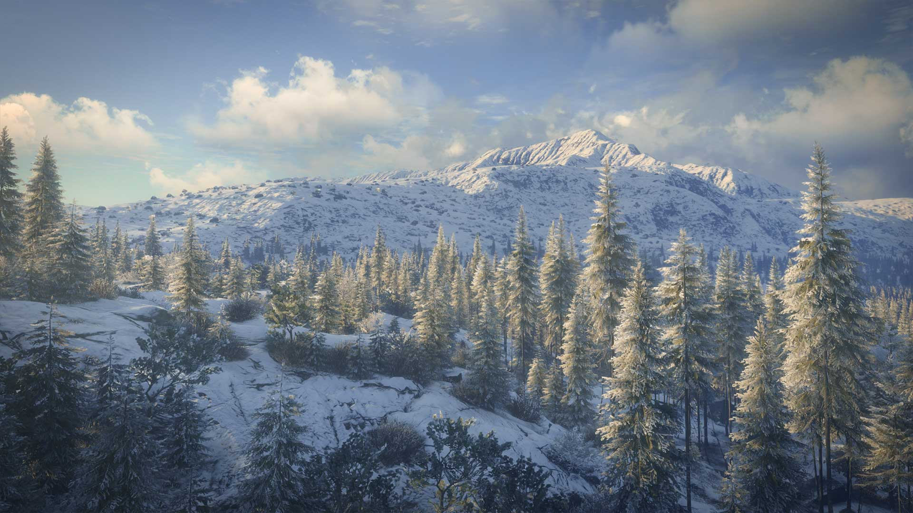
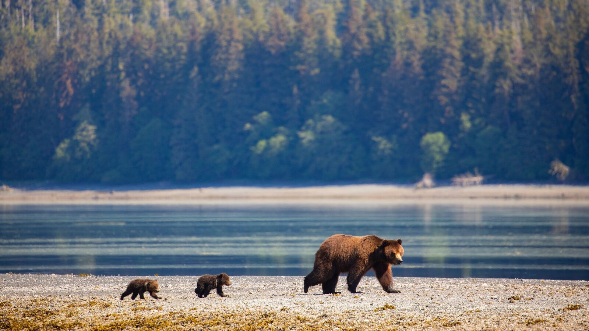

Artigo
Maravilhas Verdes da Terra: Maiores Florestas do Mundo
As florestas, vastos ecossistemas que abrigam uma diversidade incrivel de vida, desempenham um papel vital na saude do planeta. Entre esses tesouros verdes, algumas se destacam como verdadeiras maravilhas da natureza, ocupando vastas extensões e oferecendo um lar único para uma infinidade de espécies. Mais informações click aqui!

1. Floresta Amazônica: O Pulmão do Mundo
A Floresta Amazônica é, inquestionavelmente, a rainha das florestas. Estendendo-se por aproximadamente 6,7 milhões de quilômetros quadrados, ela atravessa nove países sul-americanos, incluindo o Brasil, Peru, Colômbia e Venezuela, Além de sua biodiversidade extraordinária, a Amazônia desempenha um papel crucial na regulação climática global, absorvendo grandes quantidades de dióxido de carbono e produzindo oxigênio vital para a vida na Terra Mais informações click aqui!

2. Taiga Siberiana: A Floresta Boreal Implacável
A Taiga Siberiana, também conhecida como Floresta Boreal, se estende por vastas áreas da Rússia, Canadá, Alasca e Escandinávia. Com cerca de 10 milhões de quilômetros quadrados, essa floresta fria é adaptada para suportar invernos rigorosos, com árvores resistentes, como pinheiros abetos. Apesar das condições extremas, a Taiga abriga uma variedade surpreendente de vida selvagem, incluindo alces, ursos e lobos. Mais informações click aqui!

3. Floresta do Congo: Tesouro Verde Africano
Localizada na África central, a Floresta do Congo é a segunda maior floresta tropical do mundo, abrangendo aproximadamente 3,7 milhões de quilômetros quadrados. Esta exuberante floresta é o lar de uma incrível diversidade de espécies, incluindo gorilas, chimpanzés e elefantes. Infelizmente, enfrenta ameaças crescentes de desmatamento e atividades humanas, destacando a importância da conservação. Mais informações click aqui!

4. Floresta Valdiviana: A Jóia Escondida do Chile
4. A Floresta Valdiviana, situada no sul do Chile e parte da Argentina, é uma das últimas florestas temperadas da Terra. Embora relativamente pequena em comparação com outras, cobrindo cerca de 248 mil quilômetros quadrados, essa floresta é única em sua riqueza de biodiversidade, com espécies endêmicas e uma paisagem deslumbrante de rios e lagos. Mais informações click aqui!

5. Floresta Nacional Tongass: O Orgulho do Alasca
A Floresta Nacional Tongass, localizada no sudeste do Alasca, é a maior floresta temperada de chuva do mundo, cobrindo aproximadamente 69 mil quilômetros quadrados. Sua beleza cênica é acentuada por glaciares, fiordes e uma incrível diversidade de vida selvagem, tornando-a um destino imperdivel para os amantes da natureza. Mais informações click aqui!
Essas florestas representam verdadeiros tesouros naturais, desempenhando papéis cruciais na manutenção do equilíbrio ecológico e na preservação da biodiversidade. No entanto, a pressão humana e as mudanças climáticas ameaçam esses ecossistemas preciosos, destacando a urgência da conservação e da gestão sustentável para garantir que as maiores florestas do mundo continuem a prosperar para as gerações futuras.